Casa Inteligente
Sua casa, mais inteligente e conectada.
Monitore sensores e controle dispositivos da sua casa através de uma única interface web.

Problemas
Uma casa mais conectada começa com um controle mais simples
Controlar diferentes dispositivos de uma residência manualmente pode ser pouco prático e dificultar o acompanhamento do que acontece em cada ambiente. Além disso, informações como temperatura, luminosidade, umidade e presença nem sempre estão disponíveis de forma centralizada.
Essa dificuldade afeta principalmente pessoas que buscam mais praticidade, segurança e controle no dia a dia, mas encontram sistemas complexos ou com custos elevados.
Pensando nisso, surgiu a proposta de desenvolver uma solução que reúna monitoramento e automação residencial em uma única interface, tornando essas tecnologias mais acessíveis e fáceis de utilizar.
Soluções
Uma central inteligente para controlar e monitorar sua casa
O CasaSmart integra sensores, Arduino, Raspberry Pi e uma interface web para permitir o monitoramento e o controle de diferentes recursos da residência.
Os sensores coletam informações do ambiente, como temperatura, luminosidade, umidade e presença. Esses dados são processados pelo sistema e apresentados ao usuário através do painel web, que também permite enviar comandos para dispositivos da casa.
O principal diferencial da solução é reunir monitoramento e controle em um único sistema, permitindo que o usuário acompanhe as condições da residência e interaja com seus dispositivos de maneira simples e centralizada.
Funcionalidades
Iluminação Inteligente
Controle as luzes dos ambientes manualmente ou permita que o sistema realize o acionamento automaticamente com base nas informações dos sensores.
Monitoramento Ambiental
Acompanhe informações como temperatura, umidade e luminosidade diretamente pelo painel de controle.
Detecção de Presença
Identifique a presença ou movimentação nos ambientes e utilize essas informações para realizar ações automatizadas.
Portão Automático
Controle a abertura e o fechamento do portão da garagem através da interface web.
Modo Automático e Manual
Escolha entre deixar o sistema tomar decisões automaticamente ou assumir o controle dos dispositivos através do painel.
Alertas
Receba informações sobre situações identificadas pelos sensores, como presença detectada, temperatura elevada ou detecção de água.
Benefícios
Mais praticidade
Controle diferentes dispositivos da residência através de uma única interface.
Automação
Permita que determinadas tarefas sejam realizadas automaticamente de acordo com as condições do ambiente.
Mais segurança
Monitore a presença e receba alertas sobre situações identificadas pelo sistema.
Mais controle
Tenha uma visão centralizada das condições e dos dispositivos da residência.
Solução acessível
Utilize componentes como Arduino e Raspberry Pi para demonstrar conceitos de automação residencial de forma acessível.
Tudo conectado
Integre sensores, dispositivos e interface web em um único sistema.
Como Funciona
01 — Detecte
Os sensores instalados na residência coletam informações do ambiente, como temperatura, luminosidade, umidade e presença.
02 — Processe
O Arduino e o Raspberry Pi recebem e processam as informações coletadas pelos sensores.
03 — Monitore
Os dados são disponibilizados no painel web, permitindo que o usuário acompanhe o estado da residência.
04 — Controle
O usuário pode enviar comandos pelo painel para controlar dispositivos como luzes e portão, além de alternar entre os modos automático e manual.
05 — Automatize
No modo automático, o sistema utiliza os dados dos sensores para realizar ações de acordo com as condições configuradas.
Público-Alvo
Para quem é o Casa Smart?
O projeto é destinado a pessoas interessadas em automação residencial, tecnologia e Internet das Coisas (IoT), além de estudantes e entusiastas de programação e eletrônica.
A solução é especialmente relevante para quem deseja compreender como sensores, dispositivos eletrônicos e sistemas web podem trabalhar juntos para criar uma residência mais conectada, prática e inteligente.
Por possuir também uma finalidade educacional, o projeto pode ser utilizado para demonstrar de forma prática conceitos de automação, programação, eletrônica e desenvolvimento web.
Tecnologias
HTML5
Estruturará as páginas e elementos do painel web.
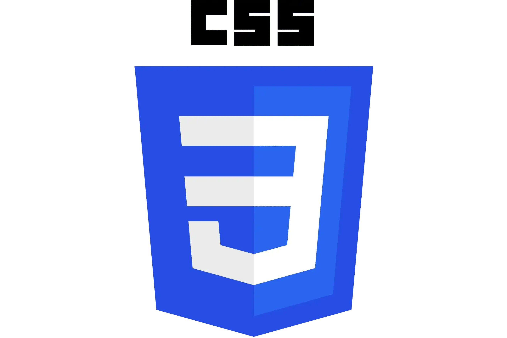
CSS
Definirá o visual, layout e aparência do site.
Tailwind CSS
Facilitará a criação do layout e da interface responsiva.
Vanilla JavaScript
Permitirá a interação do usuário e o controle dos dispositivos pelo site.
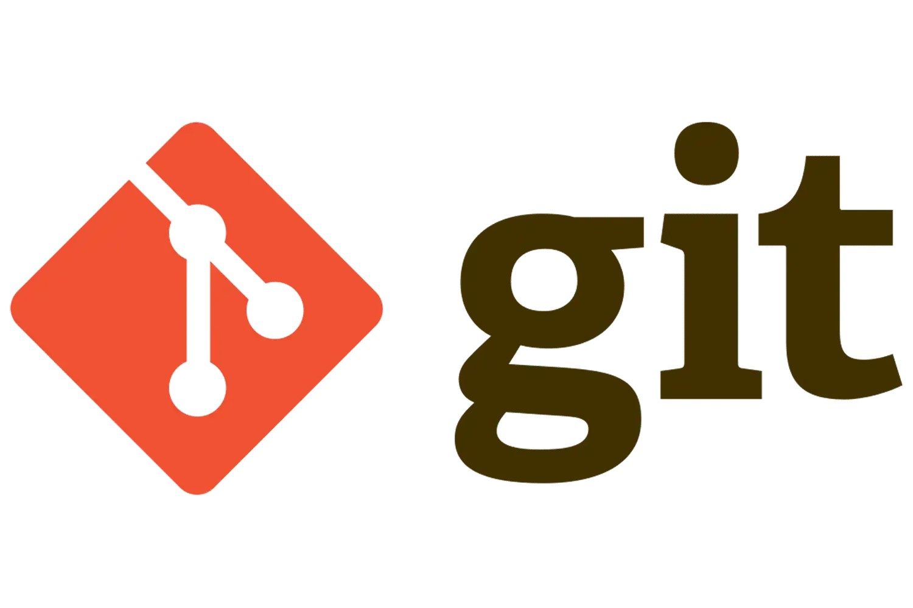
Git
Controlará as versões e alterações do código do projeto.
GitHub
Armazenará o código e permitirá o trabalho colaborativo da equipe.
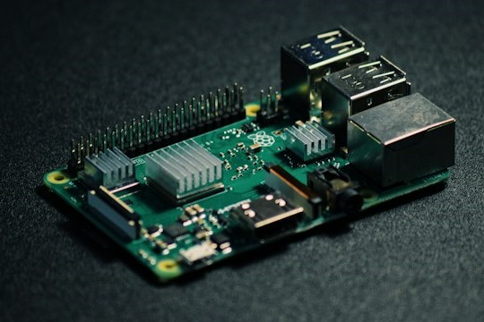
Raspberry Pi
Controlará os sensores e dispositivos da casa e executará o sistema.
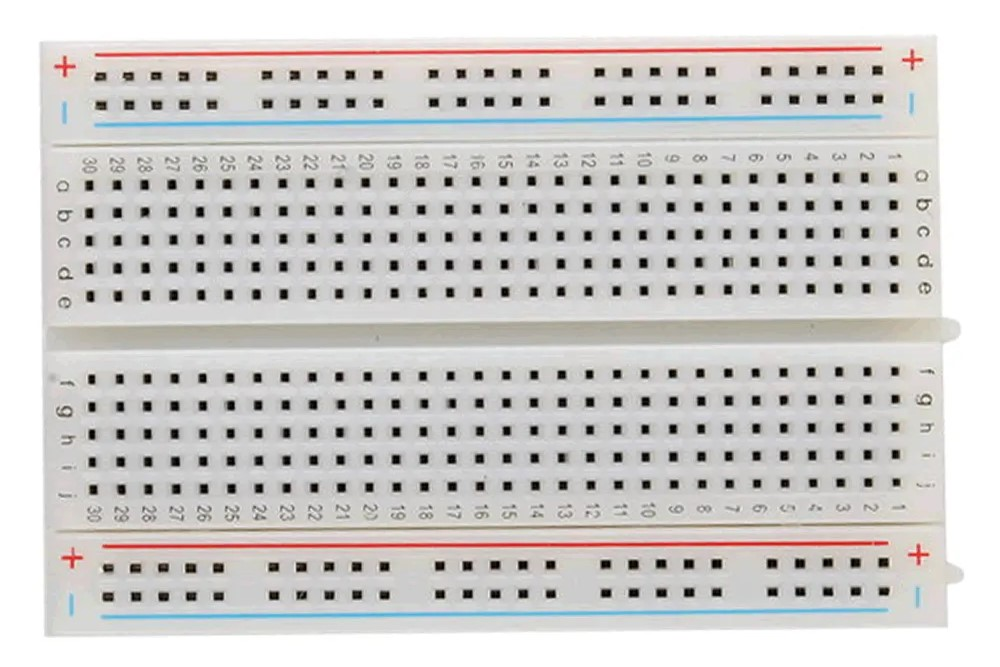
Protoboard
Permitirá montar e testar os circuitos da maquete sem soldagem.
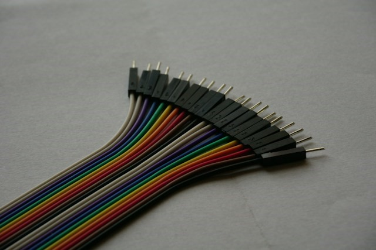
Jumpers
Farão as conexões elétricas entre o Raspberry Pi e os componentes.
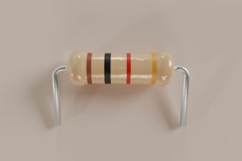
Resistores
Limitarão a corrente elétrica e protegerão os componentes.
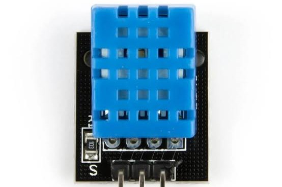
DHT11
Medirá a temperatura e a umidade do ambiente.
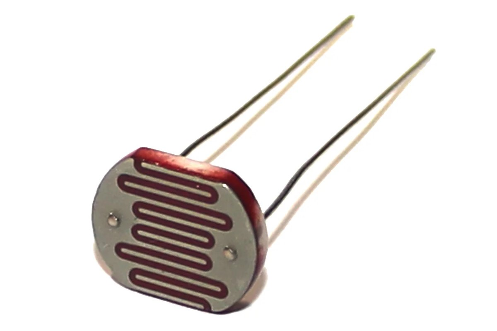
LDR
Detectará o nível de luminosidade do ambiente.
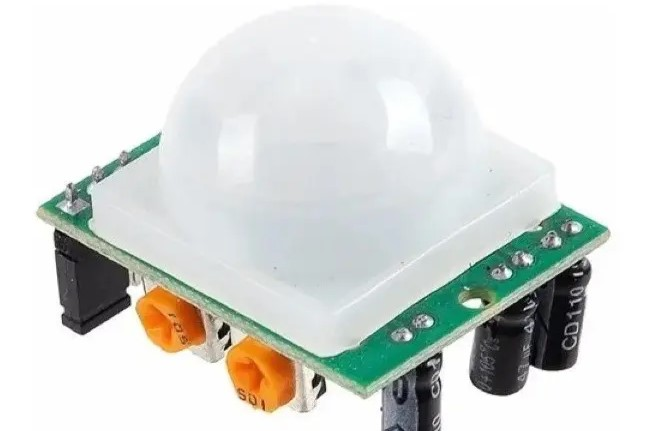
Sensor PIR HC-SR501
Detectará movimentos e presença de pessoas.
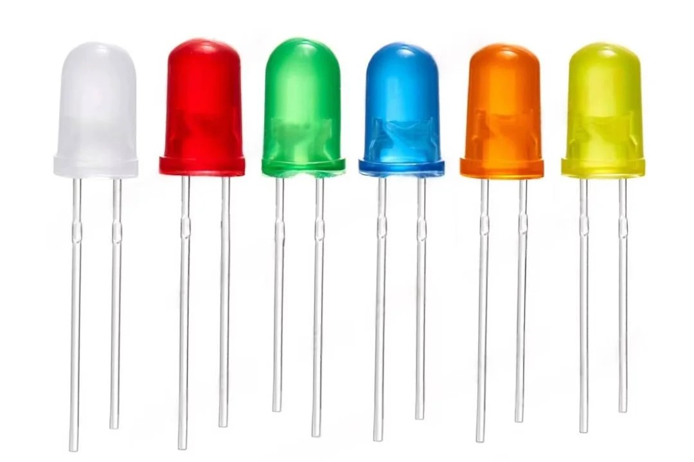
LEDs
Representarão a iluminação dos ambientes da casa.
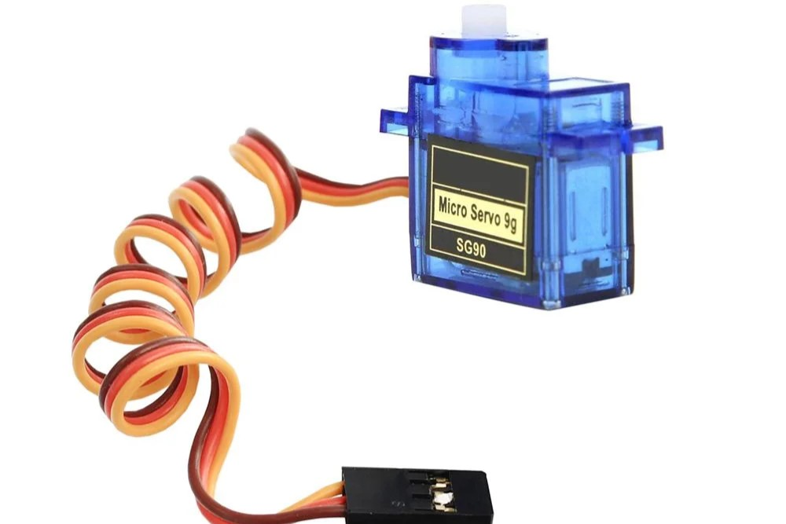
Servo Motor
Controlará a abertura e o fechamento do portão da garagem.